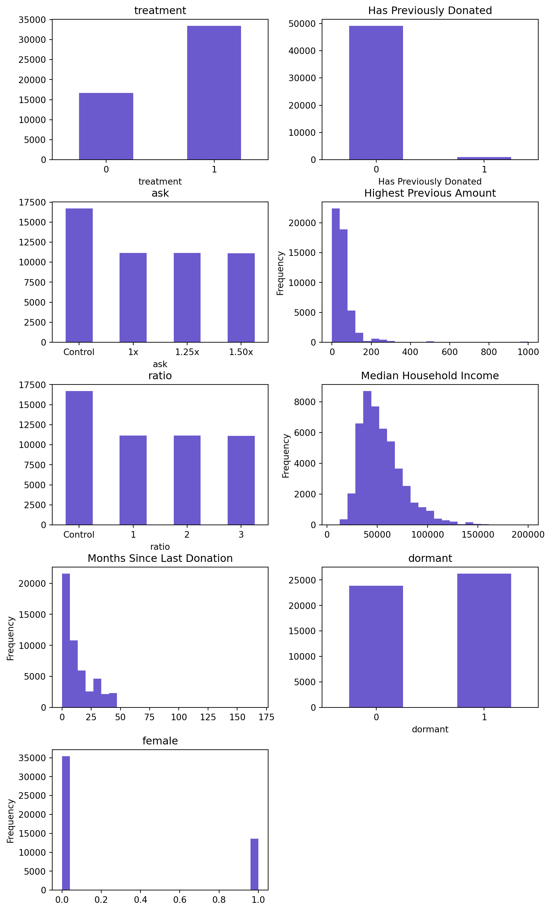
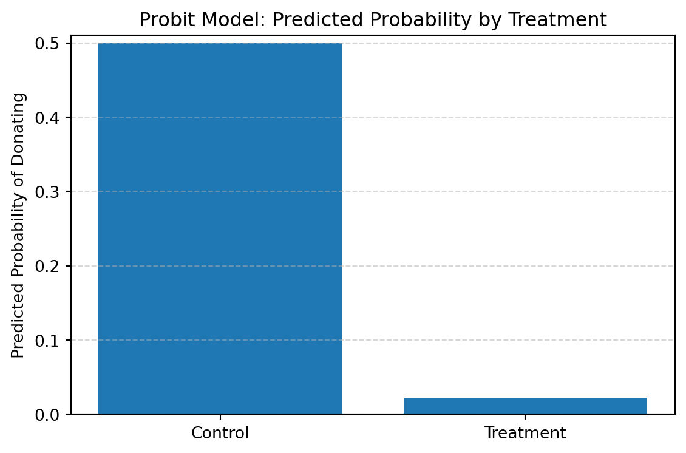
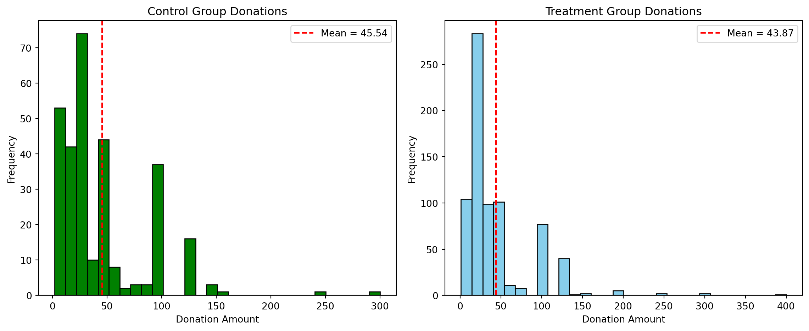

Dean Karlan at Yale and John List at the University of Chicago conducted a field experiment to test the effectiveness of different fundraising letters. They sent out 50,000 fundraising letters to potential donors, randomly assigning each letter to one of three treatments: a standard letter, a matching grant letter, or a challenge grant letter. They published the results of this experiment in the American Economic Review in 2007. The article and supporting data are available from the AEA website and from Innovations for Poverty Action as part of Harvard’s Dataverse.
The experiment was one of the largest of its kind. Notably, it was conducted for a politically motivated nonprofit using paper mail solicitations in 2005. These characteristics are important to consider, as donor behavior may have shifted in recent years. For example, individuals might become more politically active—and therefore more willing to donate—during contentious elections, while economic uncertainty could make donors more hesitant to give. Regardless of these contextual differences, we will explore how the researchers designed and analyzed their experiment, and use modern statistical techniques to replicate their findings.
Data
Description
First we’ll load the data from a dta file and conduct EDA inorder to better understand the datatypes and distrubtion of data.
We’ll rename the columns we want to make a distribution plot of and check the distribution and check for any outliers.
treatment
control
ratio
ratio2
ratio3
size
size25
size50
size100
sizeno
...
redcty
bluecty
pwhite
pblack
page18_39
ave_hh_sz
median_hhincome
powner
psch_atlstba
pop_propurban
0
0
1
Control
0
0
Control
0
0
0
0
...
0.0
1.0
0.446493
0.527769
0.317591
2.10
28517.0
0.499807
0.324528
1.0
1
0
1
Control
0
0
Control
0
0
0
0
...
1.0
0.0
NaN
NaN
NaN
NaN
NaN
NaN
NaN
NaN
2
1
0
1
0
0
$100,000
0
0
1
0
...
0.0
1.0
0.935706
0.011948
0.276128
2.48
51175.0
0.721941
0.192668
1.0
3 rows × 51 columns

Variable Definitions
Variable
Description
treatment
Treatment
control
Control
ratio
Match ratio
ratio2
2:1 match ratio
ratio3
3:1 match ratio
size
Match threshold
size25
$25,000 match threshold
size50
$50,000 match threshold
size100
$100,000 match threshold
sizeno
Unstated match threshold
ask
Suggested donation amount
askd1
Suggested donation was highest previous contribution
askd2
Suggested donation was 1.25 x highest previous contribution
askd3
Suggested donation was 1.50 x highest previous contribution
ask1
Highest previous contribution (for suggestion)
ask2
1.25 x highest previous contribution (for suggestion)
ask3
1.50 x highest previous contribution (for suggestion)
amount
Dollars given
gave
Gave anything
amountchange
Change in amount given
hpa
Highest previous contribution
ltmedmra
Small prior donor: last gift was less than median $35
freq
Number of prior donations
years
Number of years since initial donation
year5
At least 5 years since initial donation
mrm2
Number of months since last donation
dormant
Already donated in 2005
female
Female
couple
Couple
state50one
State tag: 1 for one observation of each of 50 states; 0 otherwise
nonlit
Nonlitigation
cases
Court cases from state in 2004-5 in which organization was involved
statecnt
Percent of sample from state
stateresponse
Proportion of sample from the state who gave
stateresponset
Proportion of treated sample from the state who gave
stateresponsec
Proportion of control sample from the state who gave
stateresponsetminc
stateresponset - stateresponsec
perbush
State vote share for Bush
close25
State vote share for Bush between 47.5% and 52.5%
red0
Red state
blue0
Blue state
redcty
Red county
bluecty
Blue county
pwhite
Proportion white within zip code
pblack
Proportion black within zip code
page18_39
Proportion age 18-39 within zip code
ave_hh_sz
Average household size within zip code
median_hhincome
Median household income within zip code
powner
Proportion house owner within zip code
psch_atlstba
Proportion who finished college within zip code
pop_propurban
Proportion of population urban within zip code
Balance Test
As an ad hoc test of the randomization mechanism, I provide a series of tests that compare aspects of the treatment and control groups to assess whether they are statistically significantly different from one another. Looking at table 1 in the paper we see the reserachers have provided summary statistics of several features in the data. This allows us to see that the control and treatment group are split evenly among those features. Showing the split allows us to perform useful statics techniques.
To verify the success of random assignment, I compare pre-treatment characteristics between the treatment and control groups. Table 1 in the original study shows that the groups are similar across key variables, supporting the claim that any later differences are due to the treatment, not underlying differences.
I replicate this by testing variables like mrm2 (months since last donation), dormant (donated earlier in 2005), and female. Both t-tests and linear regressions confirm no statistically significant differences, reinforcing that the groups are balanced and that the experimental design is valid.
Variables To Test at the 95% CI
mrm2, dormant,female
We’ll conduct a t-test with a 95% confidence interval to ensure and verify the months since last donation variable with a linear regression
Create a list of the variables we want to check
Create a function that we can use repedetly
We’ll use css styling throughout our analysis for better readability
from IPython.display import display, HTMLfor var in variables_to_test: res = t_test(data, var) # This displays a table already html =f""" <div class ='balance-card'> <h4> {var} — Balance Test</h4> <p>This section shows a comparison between the treatment and control groups for <code>{var}</code>. A t-test is used to determine whether the difference is statistically significant at the 95% confidence level.</p> </div> """ display(HTML(html))
t_stat
control_mean
treatment_mean
mean_diff
standard_error
control_n
treatment_n
p_value
significance
0
0.12
13.0
13.01
0.01
0.11
16687
33395
0.904855
not significant
mrm2 — Balance Test
This section shows a comparison between the treatment and control groups for mrm2. A t-test is used to determine whether the difference is statistically significant at the 95% confidence level.
t_stat
control_mean
treatment_mean
mean_diff
standard_error
control_n
treatment_n
p_value
significance
0
0.17
0.52
0.52
0.0
0.0
16687
33396
0.861961
not significant
dormant — Balance Test
This section shows a comparison between the treatment and control groups for dormant. A t-test is used to determine whether the difference is statistically significant at the 95% confidence level.
t_stat
control_mean
treatment_mean
mean_diff
standard_error
control_n
treatment_n
p_value
significance
0
-1.75
0.28
0.28
-0.01
0.0
16339
32633
0.07952
not significant
female — Balance Test
This section shows a comparison between the treatment and control groups for female. A t-test is used to determine whether the difference is statistically significant at the 95% confidence level.
Linear Regression Results
Using a Linear regression we can verfy our results of the t-test for the mrm2 variable
LinearRegression()
In a Jupyter environment, please rerun this cell to show the HTML representation or trust the notebook. On GitHub, the HTML representation is unable to render, please try loading this page with nbviewer.org.
LinearRegression()
Coefficient
Estimate
0
Intercept
12.9981
1
Treatment Coefficient
0.0137
Experimental Results
Charitable Contribution Made
I analyzed whether matched donations led to an increased response rate of making a donation.
To evaluate whether matching donations increase the likelihood that someone donates, I begin by comparing the share of donors between the treatment and control groups. A barplot shows a higher proportion of donations among individuals who received a match offer. This visual evidence suggests that the match has an encouraging effect on giving behavior.
To statistically test this difference, I run both a t-test and a simple linear regression using the binary outcome variable gave. Both methods show a small but statistically significant increase in donation likelihood for the treatment group—confirming the results reported in Table 2A, Panel A of the original paper. This indicates that simply announcing a matching offer increases the probability that someone donates, even if the amount of the match (e.g., 1:1 or 3:1) does not change that decision.
I also fit a probit regression, which models the probability of donating. While the coefficient is significant and consistent in sign with the linear model, the results do not numerically replicate Table 3 from the paper—likely due to rounding differences, omitted covariates, or reporting inconsistencies noted by the authors themselves. Nonetheless, the directional effect is clear: offering a match increases participation in giving.
These results reinforce a key behavioral insight: people are more likely to act charitably when they feel their gift is amplified, even if the actual match size doesn’t substantially change the outcome.
Percentage of Donators by Treatment Group
Did Not Give
Gave
Control
0.982142
0.017858
Treatment
0.977961
0.022039
Text(0.5, 1.0, 'Percentage of Treatment and Control Populations that Donated')
Optimization terminated successfully.
Current function value: 0.301543
Iterations 7
Probit Regression: Likelihood of Donating
Variable
Coefficient
Std. Error
z-Statistic
p-Value
treatment
-2.0134
0.0153
-131.73
0.0
Interpretation: The treatment variable has a statistically significant effect on the probability of donating.

Differences between Match Rates
Next, I assess whether the size of the matching grant—specifically 1:1, 2:1, or 3:1—affects the likelihood that individuals make a donation. I restrict the analysis to individuals in the treatment group and conduct a series of t-tests comparing response rates across the different match ratios.
The results show no statistically significant differences in donation rates between the 1:1, 2:1, and 3:1 match offers. The mean differences in response rates are small, and p-values well above 0.05 confirm that these differences are not meaningful. This aligns with the authors’ observation on page 8 of the paper that “figures suggest that neither the match threshold nor the example amount had a meaningful influence on behavior.”
In short, the data suggest that it’s the presence of a match—not its magnitude—that motivates people to give. This finding has practical implications for fundraising: offering a basic match may be just as effective as offering a more generous one, potentially saving costs for the nonprofit without sacrificing donor engagement.
To complement the t-tests, I also run a regression to assess the effect of match size on donation behavior. I restrict the sample to the treatment group and regress the binary outcome gave on indicator variables for the match ratios: 2:1 and 3:1, with 1:1 serving as the reference group. This specification allows us to estimate how each match ratio affects the likelihood of giving relative to the 1:1 baseline.
The regression coefficients for both 2:1 and 3:1 match ratios are small and not statistically significant. This mirrors the t-test findings and supports the paper’s conclusion that larger match ratios do not meaningfully increase participation. The statistical precision of the estimates is low, with wide confidence intervals crossing zero, reinforcing that any observed differences could plausibly be due to chance. These findings suggest that while match offers increase overall response rates, increasing the match beyond 1:1 yields no additional benefit.
To further examine the effectiveness of different match sizes, I calculate the difference in response rates directly from the data. The increase in giving from a 1:1 to a 2:1 match is approximately 0.19 percentage points, and from 2:1 to 3:1 is just 0.01 percentage points—both very small changes. I then compare these results to the fitted coefficients from the earlier regression, which also show similarly small and statistically insignificant differences between the match levels.
Taken together, these results suggest that raising the match ratio does not meaningfully affect the likelihood of donating. Whether donors are offered a 1:1, 2:1, or 3:1 match, their behavior appears largely unchanged. This reinforces the paper’s central finding: the presence of a match matters, but its size does not.
Match Rate Regression Analysis
# Filter for treatment groupmatched = data[data['treatment'] ==1]# Calculate average donation ratesmean_1_1 = matched[matched['ratio'] ==1]['gave'].mean()mean_2_1 = matched[matched['ratio'] ==2]['gave'].mean()mean_3_1 = matched[matched['ratio'] ==3]['gave'].mean()# Differences in meansdiff_2_1_vs_1_1 = mean_2_1 - mean_1_1diff_3_1_vs_2_1 = mean_3_1 - mean_2_1# OLS Regression: ratio as categoricalmodel = smf.ols('gave ~ C(ratio)', data=matched).fit()# Extract coefficientscoef_2_1 = model.params['C(ratio)[T.2]']coef_3_1 = model.params['C(ratio)[T.3]']# Difference between model coefficientsdiff_model_2_1_vs_1_1 = coef_2_1diff_model_3_1_vs_2_1 = coef_3_1 - coef_2_1
Differences in Response Rates by Match Ratio
Raw Mean Difference (2:1 vs 1:1): 0.0019
Raw Mean Difference (3:1 vs 2:1): 0.0001
Model Coefficient (2:1 vs 1:1): -1229429281.1791
Model Coefficient (3:1 vs 2:1): -0.0001
Note: These results suggest no statistically meaningful differences in response rate between 1:1, 2:1, and 3:1 match ratios.
Size of Charitable Contribution
In this subsection, I analyze the effect of the size of matched donation on the size of the charitable contribution.
To test whether the match offer affects how much donors give, I run a t-test and a simple linear regression comparing donation amounts between the treatment and control groups. This analysis includes all individuals, whether or not they donated. The results show a small increase in average donation amount in the treatment group, but the difference is only marginally statistically significant. This suggests that while match offers may slightly increase total donations on average, the effect is likely driven by more people giving—not by individuals giving more. This finding aligns with the broader conclusion that matching incentives affect participation rather than generosity.
Donation Size Analysis
from scipy.stats import ttest_ind# Separate groupscontrol = data[data['treatment'] ==0]['amount']treatment = data[data['treatment'] ==1]['amount']# T-testt_stat, p_value = ttest_ind(treatment, control, equal_var=False)print(f"t = {t_stat:.3f}, p = {p_value:.4f}")
t = 1.918, p = 0.0551
To isolate the effect of the treatment on the size of the donation among those who actually gave, I limit the sample to donors only and rerun the regression. This allows us to assess whether the match offer influenced how much people gave, conditional on deciding to donate. The coefficient on the treatment variable is small and statistically insignificant, indicating that among donors, those who received a match offer gave approximately the same amount as those who did not. These results suggest that the match influences whether someone donates, but not how much they give once they decide to contribute. Because the treatment was randomly assigned, the coefficient does have a causal interpretation—but here, the causal effect on donation size appears to be negligible.
The below graph illustrates visually that were was not a staistically signifcant delta between the contorl and treatment group in our sample.
Plot Analysis
# Filter to people who donateddonors = data[data['amount'] >0]control_donors = donors[donors['treatment'] ==0]treatment_donors = donors[donors['treatment'] ==1]# Calculate meanscontrol_mean = control_donors['amount'].mean()treatment_mean = treatment_donors['amount'].mean()

Simulation Experiment
As a reminder of how the t-statistic “works,” in this section I use simulation to demonstrate the Law of Large Numbers and the Central Limit Theorem.
Suppose the true distribution of respondents who do not get a charitable donation match is Bernoulli with probability p=0.018 that a donation is made.
Further suppose that the true distribution of respondents who do get a charitable donation match of any size is Bernoulli with probability p=0.022 that a donation is made.
Simulation Using Bernoullui Distrubtion
From out bernoulii parameters we can caclulate the mean and the stndard deviation of the distrubtion
The mean and standard deviation for the respondents who did not receive a donation match is (0.018, 0.13)
The mean and standard deviation for the respondents who did receive a donation match is (0.022, 0.15)
Law of Large Numbers
The Law of Large numbers say the more information we have the better our estimates will be. In statics terminology as we increase our sample size the sample mean will move closer to the population mean. To see this law in action we’ll increase our sample size to 10,00 and calcuate the average as we increase the sample size. This should allign with the means that we know from our benoulli distrbution.
The central limit theorem states that as we increase the sample size of a sample the distrubtion of the samples will become more like the bell-shaped cureve, regardless of the starting distrubtion. To Test this this we’ll create 4 sample sizes from our given bernoulli distribtuion. We should expect to see the central limit theorem ‘kick-in’ and the distribtuion start to become more bellshaped.
import numpy as npimport matplotlib.pyplot as plt#disibutin parametersp_no =0.018p_match =0.022#sample sizes sample_sizes = [50, 200, 500, 1000]#number of simluatoin of a sample sizen_sim =1000fig, axs = plt.subplots(2, 2, figsize=(12, 8))axs = axs.flatten()#loop through the different sample sizefor i, n inenumerate(sample_sizes): diffs = []for _ inrange(n_sim):#pull a no_match from a binomial distrubtion of size 1000 no_match = np.random.binomial(1, p_no, size=n)#pull a match from a binomial distrubtion of size 1000 match = np.random.binomial(1, p_match, size=n)#append the differences to a running list per sample size diff = match.mean() - no_match.mean() diffs.append(diff)# plot the graphs axs[i].hist(diffs, bins=30, color='skyblue', edgecolor='black') axs[i].axvline(p_match - p_no, color='red', linestyle='--', label='True Difference') axs[i].set_title(f"Sample Size = {n}") axs[i].set_xlabel("Mean Difference (Match - No Match)") axs[i].set_ylabel("Frequency") axs[i].legend()plt.suptitle("Histograms of Sample Mean Differences — Central Limit Theorem in Action")plt.tight_layout()plt.show()